Oirase
Oirase · Aomori
Oirase
Highlighted on the Aomori map.
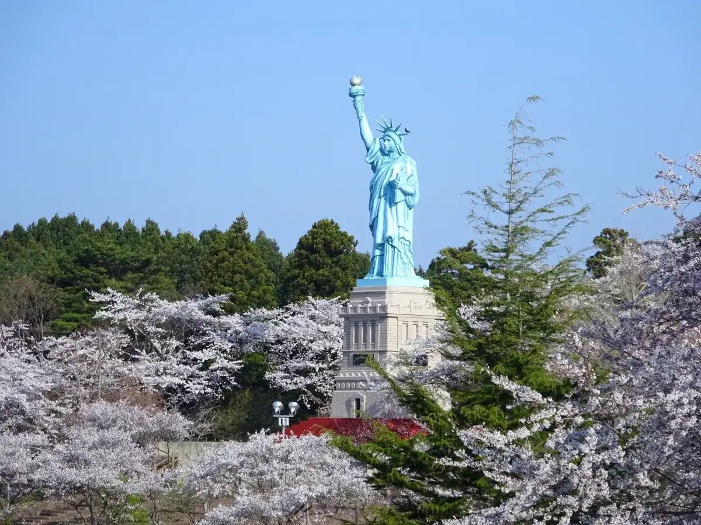
Stay
旅館 高橋
Ryokan Takahashi
Ryokan inn in Momoishi in Oirase, Aomori.
みちのくサニーフラット おいらせ店
Michinoku Sunny Flat Oirase
Apartment hotel in Oirase, Aomori.
Dining
かにとお鮨 松
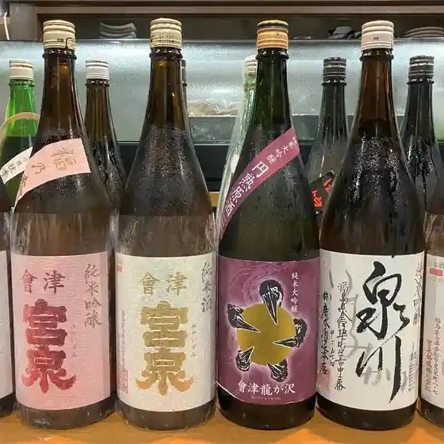
Kanitoo Sushi Matsu
大竹菓子舗 イオンモール下田店
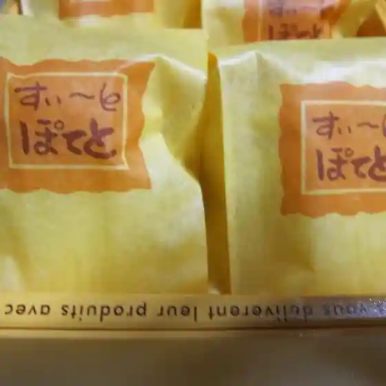
Ootake Kashi Ho Ionmooru Shimoda Mise
ファーマーズマルシェ Hitotsubu
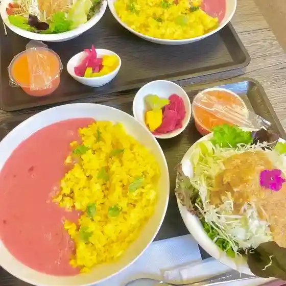
Faamaazumarushie Hitotsubu
大心亭
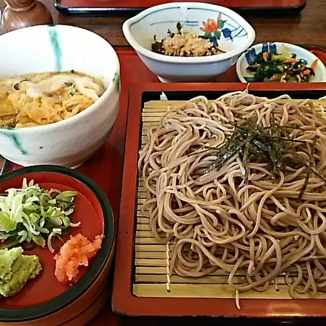
Daishin Tei
かかし 下田店
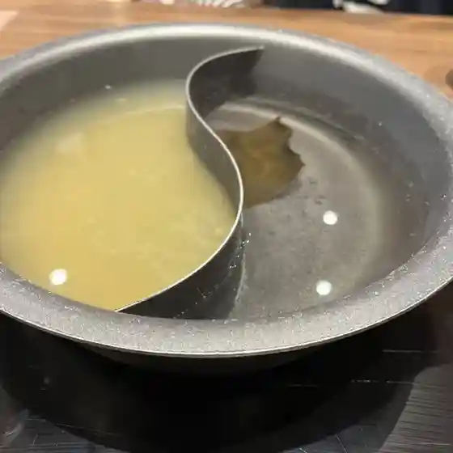
Kakashi Shimoda Mise
小笠原食堂 下田店
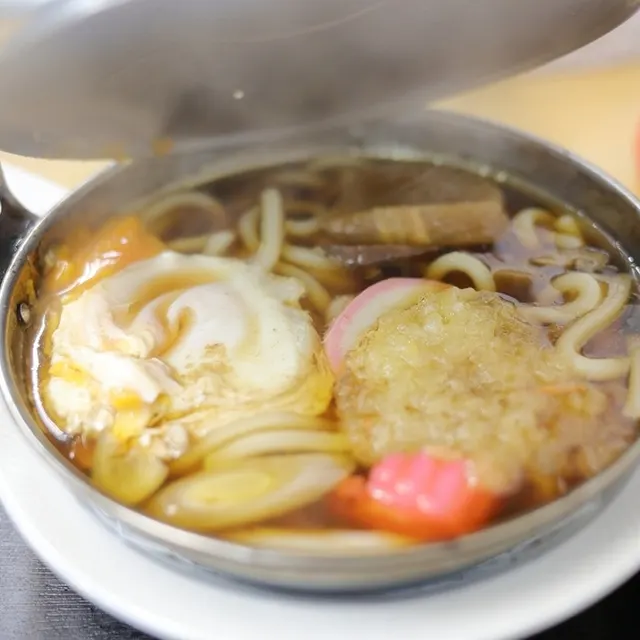
Ogasawara Shokudou Shimoda Mise
あぐりの里 おいらせ おいらせ広域物産館
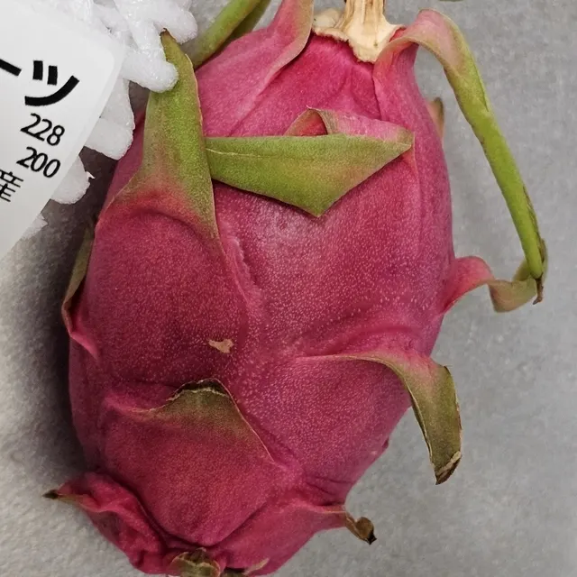
Agurino Sato Oirase Oirase Kouiki Bussan Kan
精肉専門 Ro3 イオンモール下田店
Seiniku Senmon Ro3 Ionmooru Shimoda Mise
おいらっせ桃川
Oirasse Momo Kawa
LAWSON おいらせ一川目店
Lawson Oirase Ichikawa Me Mise
タリーズコーヒー イオンモール下田店
Tariizukoohii Ionmooru Shimoda Mise
セブンイレブン おいらせ新田店
Sebun'Irebun Oirase Nitta Mise
果汁工房 果琳 イオンモール下田店
Kajuu Koubou Ka Rin Ionmooru Shimoda Mise
パティスリー FUJISAWA
Pateisurii Fujisawa
ファミリーマート おいらせ町店
Famiriimaato Oirase Machi Mise
みやきん おいらせ店
Miyakin Oirase Mise
セブンイレブン おいらせ百石店
Sebun'Irebun Oirase Momoishi Mise
藤沢製菓 阿光坊店
Fujisawa Seika Akou Bou Mise
ジョイハウス きっちんエブリー
Joihausu Kitchin Eburii
からあげ まつむら商店 三沢店
Karaage Matsumura Shouten Misawa Mise
イオン食品館 下田店
Ion Shokuhinkan Shimoda Mise
らーめんつけめん専
Raamentsukemen Sen
中華そば なんぶ庵
Chuuka Soba Nanbu Iori
ユニバース 百石店
Yunibaasu Momoishi Mise
Sights
Japan's Largest Statue of Liberty
Statue of Liberty replica in Icho Park, on the same 40°40' north latitude as New York.
Great Ginkgo of Negishi
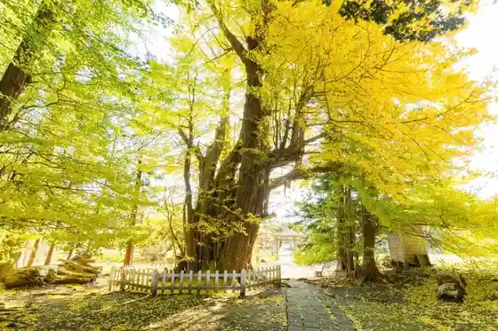
Prefectural natural monument ginkgo, 32 m tall and 16 m around, estimated over 1,100 years old.
Icho Park
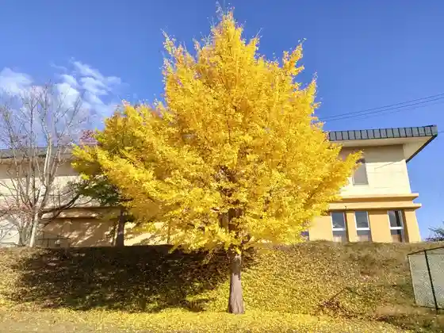
Park with spring cherry blossoms, hydrangeas and autumn ginkgo, home to the Statue of Liberty replica.
Kawayo Green Farm
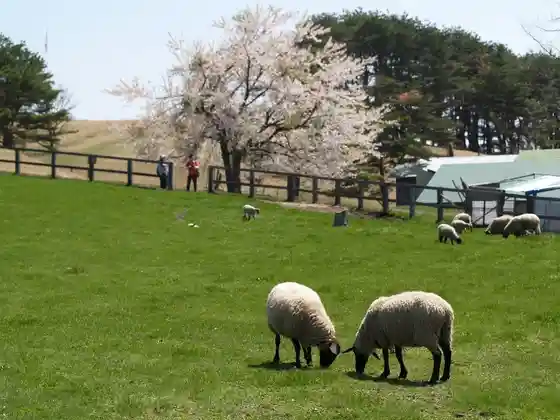
A 50-hectare farm looking out over the Hakkoda Mountains. Hosts events, concerts, exhibitions, etc.
Momokawa Sake Brewery
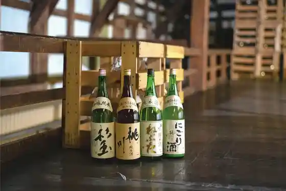
Brewery founded in 1889 using Oirase River underground water and Aomori sake rice.
Agurinosato Oirase
Agurinosato Oirase is a pick-your-own farm and hands-on facility offering not only all sorts of fruits and vegetables but also various delights.
Kehi Shrine
Shrine on the site of the Nanbu domain's largest horse ranch, known for its guardian deity of horses.
Shimoda Park
Park also called Swan Park, one of Aomori's main swan wintering spots.
Mukaiyama Station Museum
Tiny museum inside Mukaiyama Station run by local fans, with old railway equipment.
Oyama Shogi Memorial Hall
Museum about shogi master Oyama Yasuharu, the 15th Lifetime Meijin.